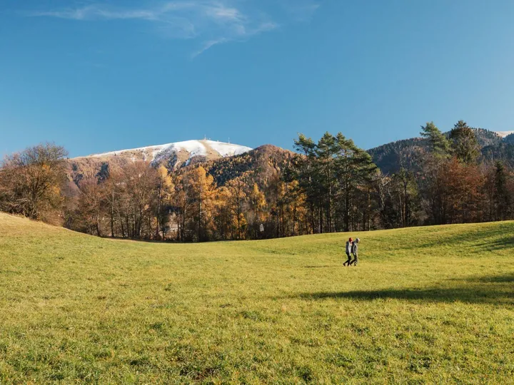

sab 31 ott
Cavarnere, voci e silenzi dei boschi
Un’emozionante passeggiata notturna nei boschi di Cavarnere , tra faggi, carpini e pini ascolteremo le voci e i silenzi dei boschi e storie e leggende del passato, racconti di misteri e leggende in bilico tra sabba e riti antichi .
 Indicazioni
Indicazioni
- Costi e prenotazioni
- Costo non indicato · Prenotazione non indicata
- Programma
- Programma da verificare. Apri la fonte ufficiale per orari e possibili aggiornamenti.
- In caso di maltempo
- Nessuna indicazione specifica pubblicata.
- Note
- Acquisito automaticamente dalla fonte.
L’EVENTO
Descrizione completa
Un’emozionante passeggiata notturna nei boschi di Cavarnere , tra faggi, carpini e pini ascolteremo le voci e i silenzi dei boschi e storie e leggende del passato, racconti di misteri e leggende in bilico tra sabba e riti antichi .
Si narra che il centro di un secolare ceppo di maestosi faggi nella foresta di Cavarnere fosse l’abituale ritrovo di un gruppo di streghe che nelle notti senza luna si ritrovavano per evocare i loro riti satanici... Ma sarà vero? Cosa ci sarà di reale e quanto invece è un mescolarsi di paure, inverni incombenti e tradizione popolare?
Quest'anno cantori e ciceroni dello Spettacolo di Mistero saranno gli " Insolito Gruppo ", il " Mazarol ", la guida Valentina Pilotti e il gruppo "Le note storte". Tra la storia del Basilisc e delle antiche spade della Valbelluna, ci sarà tutto il tempo per scoprire i sapori della tradizione come la crema di zucca e patate, la focaccia contadina senza scordare il vin brulè con le castagne che riscaldano animo e corpo.
Il semplice ma suggestivo percorso proposto dalla Pro Loco di Trichiana è di 6km con 200m di dislivello da percorrere in 4 ore per una lunga nottata diversa dal solito.
Sono previste due partenze ad orari diversi, al momento della pre iscrizione verrà chiesto in quale gruppo si preferisce partecipare, fino a conclusione dei posti disponibili. In caso di maltempo la manifestazione verrà rinviata con gli stessi orari al 1 novembre previo avviso telefonico da parte dell’organizzazione.
IL PROGRAMMA
Programma e orari
Appuntamenti raccolti dalle fonti elencate. Dove manca un orario, non è ancora disponibile in questa scheda.
Programma pubblicato
- 2026-10-31 — 2026-10-31 · 16:45:00
- 2026-10-31 — 2026-10-31 · 17:45:00
INFORMAZIONI UTILI
Prima di partire
- Controllare la fonte prima di partire.
ORGANIZZAZIONE